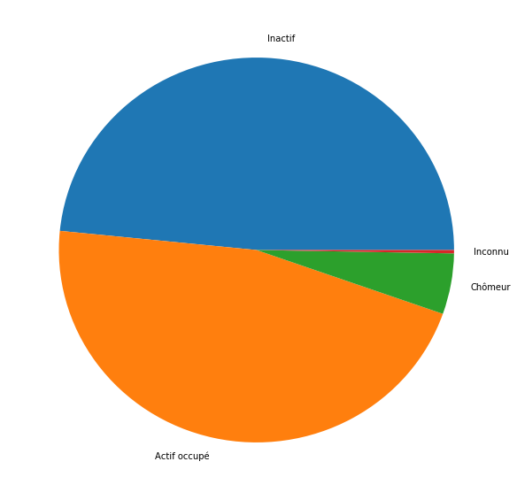
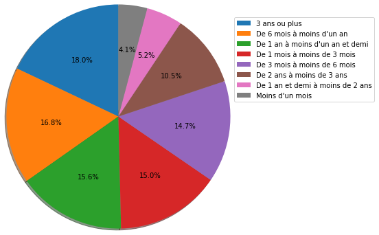
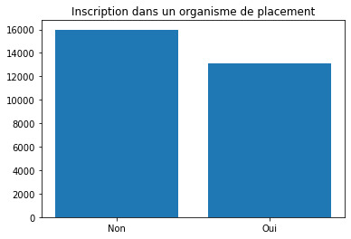

Comprendre le chômage en France
Vous êtes vous déjà demandé d’où sortaient les chiffres qu’annoncent les politiques ou les medias lorsqu’ils parlent de chômage. Étant un sujet d’intérêt dans les pays occidentaux, tentons de comprendre ce qu’il se passe en terme de chômages en France. Pour cela, nous avons récupéré des données sur data.gouv. Elles représentent les données du chômage en France en 2017.
Documentation du dataset
Regarder la documentation du dataset ici
Importez les librairies
pandasmatplotlib(et plus particulièrement le modulepyplot)
[16]:
import pandas as pd
import numpy as np
import matplotlib.pyplot as plt
import os
[3]:
pd.set_option('display.max_columns', None)
[4]:
pd.set_option('display.max_rows', None)
Chargez le fichier
fdeec17.csv
[5]:
rep = r"C:\Users\A340339\OneDrive - GROUP DIGITAL WORKPLACE\Documents\D_DRIVE_FR05199619L\Formation_Python\j1-data"
[6]:
os.chdir(rep)
[7]:
!dir
Le volume dans le lecteur C s’appelle System
Le numéro de série du volume est 32F6-05D2
Répertoire de C:\Users\A340339\OneDrive - GROUP DIGITAL WORKPLACE\Documents\D_DRIVE_FR05199619L\Formation_Python\j1-data
13/12/2021 09:34 <DIR> .
13/12/2021 09:34 <DIR> ..
24/04/2020 19:08 387 646 chipotle.csv
06/06/2021 04:35 2 009 datetime_data.csv
19/05/2021 03:31 2 590 412 earthquakes.csv
06/06/2021 07:10 115 700 292 fdeec17.csv
17/09/2019 17:33 5 192 296 Speed_Dating_Data.csv
17/09/2019 17:33 161 792 Speed_Dating_Data_Key.doc
6 fichier(s) 124 034 447 octets
2 Rép(s) 18 644 164 608 octets libres
[66]:
df = pd.read_csv("fdeec17.csv",index_col=0)
[9]:
df.shape
[9]:
(428642, 124)
[10]:
df.head()
[10]:
| TRIM | CATAU2010R | METRODOM | TYPMEN7 | AGE3 | AGE5 | COURED | ENFRED | NFRRED | SEXE | ACTEU | ACTEU6 | ACTIF | ACTOP | AIDFAM | ANCCHOM | ANCINACT | CONTACT | CREACCP | DEM | DISPOC | GARDEB | HALOR | INSCONT | MRA | MRB | MRBBIS | MRC | MRD | MRDBIS | MRE | MREC | MRF | MRG | MRGBIS | MRH | MRI | MRJ | MRK | MRL | MRM | MRN | MRO | MRPASSA | MRPASSB | MRPASSC | MRS | NONDIC | NREC | NRECA | NRECB | OCCREF | OFFICC | OFFRE | PASTRA | PASTRB | PASTRF | PERCREV | RABS | RAISNREC | RAISNSOU | RAISPAS | SOU | SOUA | SOUB | SOUC | SOUSEMPL | STCHE | TEMP | TRAREF | TYPCONT | TYPCONTB | CHPUB | CSE | CSER | CSP | CSTOT | CSTOTR | FONCTC | NAFG004UN | NAFG010UN | NAFG017UN | NAFG021UN | NAFG038UN | NAFG088UN | PUB3FP | QPRC | STC | CONTRA | RDET | STAT2 | STATOEP | STATUT | STATUTR | TITC | CSTMN | CSTPLC | DISPPLC | DUHAB | GARDEA | HHC6 | HORAIC | RAISON | RAISTP | STMN | STPLC | TPPRED | TXTPPRED | ANCENTR4 | SITANT | AAC | CSA | NAFANT | NAFANTG004 | DIP11 | CSTOTPRM | IDENTM | EXTRIAN | EMPNBH | HREC | HHCE | HPLUSA | JOURTR | NBTOTE | |
|---|---|---|---|---|---|---|---|---|---|---|---|---|---|---|---|---|---|---|---|---|---|---|---|---|---|---|---|---|---|---|---|---|---|---|---|---|---|---|---|---|---|---|---|---|---|---|---|---|---|---|---|---|---|---|---|---|---|---|---|---|---|---|---|---|---|---|---|---|---|---|---|---|---|---|---|---|---|---|---|---|---|---|---|---|---|---|---|---|---|---|---|---|---|---|---|---|---|---|---|---|---|---|---|---|---|---|---|---|---|---|---|---|---|---|---|---|---|---|---|---|---|---|---|---|
| ANNEE | ||||||||||||||||||||||||||||||||||||||||||||||||||||||||||||||||||||||||||||||||||||||||||||||||||||||||||||||||||||||||||||
| 2017 | 1 | 1 | 1 | 2 | 50 | 50 | 2 | 1 | 1.0 | 2 | 1.0 | 1.0 | 1.0 | 1.0 | NaN | NaN | NaN | NaN | NaN | 0.0 | NaN | NaN | 2 | NaN | NaN | NaN | NaN | NaN | NaN | NaN | NaN | NaN | NaN | NaN | NaN | NaN | NaN | NaN | NaN | NaN | NaN | NaN | NaN | NaN | NaN | NaN | NaN | NaN | NaN | NaN | NaN | 2 | 2.0 | NaN | NaN | NaN | NaN | NaN | NaN | NaN | NaN | NaN | 2.0 | 2.0 | 2.0 | NaN | NaN | NaN | NaN | 1.0 | NaN | NaN | 2.0 | 52.0 | 5.0 | 52.0 | 52.0 | 5.0 | 9.0 | EV | OQ | OQ | Q | QA | 86.0 | 3.0 | 4.0 | 3.0 | 1.0 | NaN | 2.0 | 45.0 | 35.0 | 5.0 | NaN | NaN | NaN | NaN | 6.0 | NaN | 4.0 | 1.0 | NaN | NaN | 2.0 | 2.0 | 1.0 | NaN | 4.0 | 1.0 | NaN | NaN | NaN | NaN | 30.0 | 52.0 | 1 | 263.388752 | 37.0 | NaN | 37.0 | NaN | 5.0 | NaN |
| 2017 | 1 | 1 | 1 | 2 | 15 | 15 | 2 | 2 | 1.0 | 1 | 1.0 | 1.0 | 1.0 | 1.0 | NaN | NaN | NaN | NaN | NaN | 0.0 | NaN | NaN | 2 | NaN | NaN | NaN | NaN | NaN | NaN | NaN | NaN | NaN | NaN | NaN | NaN | NaN | NaN | NaN | NaN | NaN | NaN | NaN | NaN | NaN | NaN | NaN | NaN | NaN | NaN | NaN | NaN | 2 | 2.0 | NaN | NaN | NaN | NaN | NaN | NaN | NaN | NaN | NaN | 2.0 | 2.0 | 2.0 | NaN | NaN | NaN | NaN | 1.0 | NaN | NaN | 1.0 | 67.0 | 6.0 | 67.0 | 67.0 | 6.0 | 1.0 | ET | BE | C1 | C | CA | 10.0 | 4.0 | 1.0 | 3.0 | 2.0 | 2.0 | 2.0 | 33.0 | 33.0 | 4.0 | NaN | NaN | NaN | NaN | 5.0 | NaN | 3.0 | 2.0 | NaN | NaN | 2.0 | 2.0 | 1.0 | NaN | 1.0 | 1.0 | NaN | NaN | NaN | NaN | 42.0 | 52.0 | 1 | 263.388752 | 32.0 | NaN | 32.0 | NaN | 4.0 | NaN |
| 2017 | 1 | 1 | 1 | 2 | 15 | 15 | 2 | 2 | 1.0 | 2 | 1.0 | 1.0 | 1.0 | 1.0 | NaN | NaN | NaN | NaN | NaN | 0.0 | NaN | NaN | 2 | NaN | NaN | NaN | NaN | NaN | NaN | NaN | NaN | NaN | NaN | NaN | NaN | NaN | NaN | NaN | NaN | NaN | NaN | NaN | NaN | NaN | NaN | NaN | NaN | NaN | NaN | NaN | NaN | 2 | 2.0 | NaN | NaN | NaN | NaN | NaN | NaN | NaN | NaN | NaN | 2.0 | 2.0 | 2.0 | NaN | NaN | NaN | NaN | 1.0 | NaN | NaN | 1.0 | 47.0 | 4.0 | 47.0 | 47.0 | 4.0 | 2.0 | EV | KZ | KZ | K | KZ | 65.0 | 4.0 | 3.0 | 3.0 | 1.0 | NaN | 2.0 | 35.0 | 35.0 | 5.0 | NaN | NaN | NaN | NaN | 6.0 | NaN | 4.0 | 2.0 | NaN | NaN | 2.0 | 2.0 | 1.0 | NaN | 1.0 | 4.0 | NaN | NaN | NaN | NaN | 31.0 | 52.0 | 1 | 263.388752 | 38.0 | NaN | 38.0 | NaN | 5.0 | NaN |
| 2017 | 3 | 1 | 1 | 2 | 50 | 50 | 2 | 1 | 1.0 | 2 | 1.0 | 1.0 | 1.0 | 1.0 | NaN | NaN | NaN | NaN | NaN | 0.0 | NaN | NaN | 2 | NaN | NaN | NaN | NaN | NaN | NaN | NaN | NaN | NaN | NaN | NaN | NaN | NaN | NaN | NaN | NaN | NaN | NaN | NaN | NaN | NaN | NaN | NaN | NaN | NaN | NaN | NaN | NaN | 2 | 2.0 | NaN | NaN | NaN | NaN | NaN | NaN | NaN | NaN | NaN | 2.0 | 2.0 | 2.0 | NaN | NaN | NaN | NaN | 1.0 | NaN | NaN | 2.0 | 52.0 | 5.0 | 52.0 | 52.0 | 5.0 | 9.0 | EV | OQ | OQ | Q | QA | 86.0 | 3.0 | 4.0 | 3.0 | 1.0 | NaN | 2.0 | 45.0 | 35.0 | 5.0 | NaN | NaN | NaN | NaN | 6.0 | NaN | 4.0 | 1.0 | NaN | NaN | 2.0 | 2.0 | 1.0 | NaN | 4.0 | 1.0 | NaN | NaN | NaN | NaN | 30.0 | 52.0 | 2 | 176.893923 | 37.0 | NaN | 37.0 | NaN | 5.0 | NaN |
| 2017 | 3 | 1 | 1 | 2 | 15 | 15 | 2 | 2 | 1.0 | 1 | 1.0 | 1.0 | 1.0 | 1.0 | NaN | NaN | NaN | NaN | NaN | 0.0 | NaN | NaN | 2 | NaN | NaN | NaN | NaN | NaN | NaN | NaN | NaN | NaN | NaN | NaN | NaN | NaN | NaN | NaN | NaN | NaN | NaN | NaN | NaN | NaN | NaN | NaN | NaN | NaN | NaN | NaN | NaN | 2 | 2.0 | NaN | NaN | NaN | NaN | NaN | NaN | NaN | NaN | NaN | 2.0 | 2.0 | 2.0 | NaN | NaN | NaN | NaN | 1.0 | NaN | NaN | 1.0 | 67.0 | 6.0 | 67.0 | 67.0 | 6.0 | 1.0 | ET | BE | C1 | C | CA | 10.0 | 4.0 | 1.0 | 3.0 | 2.0 | 2.0 | 2.0 | 33.0 | 33.0 | 4.0 | NaN | NaN | NaN | NaN | 5.0 | NaN | 3.0 | 2.0 | NaN | NaN | 2.0 | 2.0 | 1.0 | NaN | 1.0 | 1.0 | NaN | NaN | NaN | NaN | 42.0 | 52.0 | 2 | 176.893923 | 40.0 | NaN | 32.0 | NaN | 4.0 | NaN |
[12]:
list(df.columns)
[12]:
['TRIM',
'CATAU2010R',
'METRODOM',
'TYPMEN7',
'AGE3',
'AGE5',
'COURED',
'ENFRED',
'NFRRED',
'SEXE',
'ACTEU',
'ACTEU6',
'ACTIF',
'ACTOP',
'AIDFAM',
'ANCCHOM',
'ANCINACT',
'CONTACT',
'CREACCP',
'DEM',
'DISPOC',
'GARDEB',
'HALOR',
'INSCONT',
'MRA',
'MRB',
'MRBBIS',
'MRC',
'MRD',
'MRDBIS',
'MRE',
'MREC',
'MRF',
'MRG',
'MRGBIS',
'MRH',
'MRI',
'MRJ',
'MRK',
'MRL',
'MRM',
'MRN',
'MRO',
'MRPASSA',
'MRPASSB',
'MRPASSC',
'MRS',
'NONDIC',
'NREC',
'NRECA',
'NRECB',
'OCCREF',
'OFFICC',
'OFFRE',
'PASTRA',
'PASTRB',
'PASTRF',
'PERCREV',
'RABS',
'RAISNREC',
'RAISNSOU',
'RAISPAS',
'SOU',
'SOUA',
'SOUB',
'SOUC',
'SOUSEMPL',
'STCHE',
'TEMP',
'TRAREF',
'TYPCONT',
'TYPCONTB',
'CHPUB',
'CSE',
'CSER',
'CSP',
'CSTOT',
'CSTOTR',
'FONCTC',
'NAFG004UN',
'NAFG010UN',
'NAFG017UN',
'NAFG021UN',
'NAFG038UN',
'NAFG088UN',
'PUB3FP',
'QPRC',
'STC',
'CONTRA',
'RDET',
'STAT2',
'STATOEP',
'STATUT',
'STATUTR',
'TITC',
'CSTMN',
'CSTPLC',
'DISPPLC',
'DUHAB',
'GARDEA',
'HHC6',
'HORAIC',
'RAISON',
'RAISTP',
'STMN',
'STPLC',
'TPPRED',
'TXTPPRED',
'ANCENTR4',
'SITANT',
'AAC',
'CSA',
'NAFANT',
'NAFANTG004',
'DIP11',
'CSTOTPRM',
'IDENTM',
'EXTRIAN',
'EMPNBH',
'HREC',
'HHCE',
'HPLUSA',
'JOURTR',
'NBTOTE']
En faisant un pie-chart, montrez la part de chômeurs, d’inactifs et d’actifs occupés en France à partir de la variable ACTEU. Faites attention de faire apparaitre :
Le pourcentage de chaque partie
Une légende
[13]:
df['ACTEU'].unique()
[13]:
array([ 1., 3., 2., nan])
[35]:
df_copy = df.copy()
[36]:
dico_acteu = {
1:'Actif occupé',
2:'Chômeur',
3:'Inactif',
np.nan:'Inconnu'
}
[39]:
df_copy['ACTEU'] = df['ACTEU'].map(dico_acteu)
[40]:
df_copy['ACTEU'].unique()
[40]:
array(['Actif occupé', 'Inactif', 'Chômeur', nan], dtype=object)
[41]:
chomeurs = df['ACTEU'].replace({1:'Actif occupé',2:'Chômeur',3:'Inactif'}).fillna('Inconnu')
[42]:
chomeurs.value_counts()
[42]:
Inactif 207520
Actif occupé 198054
Chômeur 21864
Inconnu 1204
Name: ACTEU, dtype: int64
[25]:
df_copy['ACTEU'].unique()
[25]:
array(['Actif occupé', 'Inactif', 'Chômeur', nan], dtype=object)
[50]:
x = chomeurs.value_counts(dropna=False)
x
[50]:
Inactif 207520
Actif occupé 198054
Chômeur 21864
Inconnu 1204
Name: ACTEU, dtype: int64
[55]:
plt.figure(figsize=(10,10))
plt.pie(x, labels=x.index)
plt.show()

—> Le chiffre du chômage semble bas et, si on regarde l’explication des inactifs, celle-ci semble inclure beaucoup de monde (étudiants, personne ne cherchant pas d’emploi etc.)
Faites le même graphique sur la variable ACTEU6 qui est plus précise sur le type d’actifs
[56]:
acteu_6 = {
1:'Actif Occupé',
3:'Chômeur PSERE',
4:'Etudiant, élève, stagiaire en formation',
5:'Autre Chômeur BIT',
6:'Autres inactifs (dont retraité)'
}
acteu_6
[56]:
{1: 'Actif Occupé',
3: 'Chômeur PSERE',
4: 'Etudiant, élève, stagiaire en formation',
5: 'Autre Chômeur BIT',
6: 'Autres inactifs (dont retraité)'}
[13]:
[13]:
Actif Occupé 198054
Autres inactifs (dont retraité) 172921
Etudiant, élève, stagiaire en formation 34599
Chômeur PSERE 20854
Inconnu 1204
Autre Chômeur BIT 1010
Name: ACTEU6, dtype: int64
[59]:
# Intéressant: si le numéro n'existe pas il renvoie un None
acteu_6.get(8)
En créant un stacked bar chart, comparez :
le rapport chômeurs / Actifs occupés
Le rapport chômeurs / (Actifs occupés + Inactifs)
[60]:
df['ACTEU'].value_counts(dropna=False)
[60]:
3.0 207520
1.0 198054
2.0 21864
NaN 1204
Name: ACTEU, dtype: int64
[61]:
df_copy['ACTEU'] = df['ACTEU'].replace({1:'Actif occupé',2:'Chômeur',3:'Inactif'}).fillna('Inconnu')
[63]:
df_copy['ACTEU'].value_counts(dropna=False)
[63]:
Inactif 207520
Actif occupé 198054
Chômeur 21864
Inconnu 1204
Name: ACTEU, dtype: int64
[15]:
# On recréé les données dont on a besoin
[15]:
Inactif 207520
Actif Occupé 198054
Chômeur 21864
Inconnu 1204
Name: ACTEU, dtype: int64
[85]:
rapport1 = sum(df['ACTEU']==2)/sum(df['ACTEU']==1)
rapport2 = sum(df['ACTEU']==2)/sum((df['ACTEU']==2) | (df['ACTEU']==3))
data_chom = [rapport1, rapport2]
data_chom
[85]:
[0.11039413493289708, 0.09531615108290029]
[16]:
# On créé le rapport chômeurs / Actifs occupés et le rapport Chômeurs / (Actifs occupés + Inactifs)
Rapports de chômeurs:
[0.11039413493289708, 0.05390878113488537]
[17]:
# Pour la suite, on calcule le complémentaire des 2 rapports précédents
Rapports d'actifs:
[0.8896058650671029, 0.9460912188651146]
[ ]:
[89]:
data_chom_comp = []
for i in data_chom:
ratio = 1 - i
data_chom_comp = data_chom_comp.extend(ratio)
---------------------------------------------------------------------------
TypeError Traceback (most recent call last)
<ipython-input-89-fd4bf5dcd948> in <module>()
2 for i in data_chom:
3 ratio = 1 - i
----> 4 data_chom_comp = data_chom_comp.extend(ratio)
TypeError: 'float' object is not iterable
[90]:
data_chom_comp = []
for i in data_chom:
print(1-i)
0.8896058650671029
0.9046838489170997
[92]:
data_chom_comp = []
for i in data_chom:
data_chom_comp.append(1-i)
data_chom_comp
[92]:
[0.8896058650671029, 0.9046838489170997]
[18]:
# On créé une liste legend qui contiendra les deux categories :
## chômeurs / Actifs occupés
## Chômeurs / (Actifs occupés + Inactifs)
[18]:
['Chômeurs / Actifs Occupés', 'Chômeurs / Actifs + Inactifs']
[93]:
df['ACTEU'].unique()
[93]:
array([ 1., 3., 2., nan])
[94]:
# 1 Actif occupé
# 2 Chômeur
# 3 Inactif
[96]:
df['ACTEU'].value_counts(dropna=False)
[96]:
3.0 207520
1.0 198054
2.0 21864
NaN 1204
Name: ACTEU, dtype: int64
[97]:
df['ACTEU'].replace({1:'Actif'}).value_counts()
[97]:
3.0 207520
Actif 198054
2.0 21864
Name: ACTEU, dtype: int64
[98]:
df['ACTEU'].replace({1:'Actif',2:'Chômeur',3:'Inactif'}).value_counts(dropna=False)
[98]:
Inactif 207520
Actif 198054
Chômeur 21864
NaN 1204
Name: ACTEU, dtype: int64
[99]:
df['ACTEU'].replace({1:'Actif',2:'Chômeur',3:'Inactif'}).fillna('Inconu').value_counts(dropna=False)
[99]:
Inactif 207520
Actif 198054
Chômeur 21864
Inconu 1204
Name: ACTEU, dtype: int64
[ ]:
[19]:
# On créé deux bar charts qui seront superposés l'un à l'autre
## N'oubliez pas d'utiliser deux plt.bar()
## Pour créer les légendes, on peut utiliser plt.text()
## Pour créer un titre, on peut utiliser plt.set_title()

Il semblerait que le chômage représentait 11% de la population active (travailleuse) en France en 2017 selon le BIT
En créant à nouveau un bar chart, regardez cette fois la répartition de l’ancienneté du chômage. Le nom de la variable est ANCCHOM
[31]:
# On renomme les catégories de notre colonne
[31]:
3 ans ou plus 3906
De 6 mois à moins d'un an 3648
De 1 an à moins d'un an et demi 3398
De 1 mois à moins de 3 mois 3270
De 3 mois à moins de 6 mois 3193
De 2 ans à moins de 3 ans 2289
De 1 an et demi à moins de 2 ans 1132
Moins d'un mois 902
Name: ANCCHOM, dtype: int64
[32]:
# On créé maintenant notre bar chart
[32]:
<BarContainer object of 8 artists>

La répartition se voit assez mal sur le bar chart, tentez de le refaire sur un pie chart
[23]:

Il serait intéressant de voir la répartition des personnes inscrites à Pôle Emploi ou dans un organisme de placement parmi ces personnes au chômage. Regardez cette répartition grâce à la colonne CONTACT
Enlevez directement les NaN de votre graphique
[24]:
# On renomme les catégories de notre colonne
[24]:
Non 15984
Oui 13144
Name: CONTACT, dtype: int64
[25]:
# On créé notre graphique

Regardons ce qui pousse les français à changer d’emploi, grâce à la colonne CREACCP, crééz un bar chart horizontale qui va permettre de connaitre les principales raisons de changement d’emploi des français.
[26]:
# On renomme les catégories de notre colonne
[26]:
Doit ou veut déménager 216
Veut s'installer à son compte 354
Désire diminuer son temps de transport 598
Désire un travail avec un rythme horaire plus adapté ou plus modulable 1102
Trouve l'ambiance de travail mauvaise, les relations de travail conflictuelles 1223
Veut changer de métier ou de secteur 1392
Veut travailler plus d'heures 1404
Risque de perdre ou va perdre son emploi actuel (y compris fin de contrats courts) 1582
Désire des conditions de travail moins pénibles ou plus adaptées à sa santé 1820
Veut un emploi plus stable (CDI) 2462
Désire un emploi plus intéressant 2779
Désire augmenter ses revenus 6775
Name: CREACCP, dtype: int64
[27]:
# Nous avons besoin de faire une répartition par pourcentage
# Calculons donc le nombre total de répondants
21707
[28]:
# Calculons maintenant la répartition de chacune des réponses
[0.00995071 0.0163081 0.02754872 0.05076703 0.05634127 0.06412678
0.0646796 0.07287972 0.08384392 0.11341963 0.12802322 0.3121113 ]
[29]:
# Créons maintenant le graphique

[ ]: